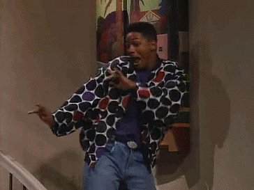

FRONTEND (RE)EVOLUTION
- The Secret Lab 2015 -
Marco Cardoso
Senior Frontend Developer
@anotherwebstorm
What's Frontend?
My mother still doesn't understand what my job is, but...
Frontend development might be understood as making things pretty and look good on the web. Which is Ok.
Good-looking things sell better.
That's why we are the cool guys.

But we actually do much more than that.
We focus in 2 simple concepts.
- We build the bridge between the Web Design and the User Interaction in the Web.
- And we translate the Server Data (Backend) into visual information in the Web.
“A Frontender requires both aesthetic sensitivity and programmatic rigor.”
We also have knowledge / skills in:
- Accessibility. Provide as many points of access as possible.
- Usability. Information Architecture
- Performance. Make it as fast as possible.
- and goes on...
Frontend. some years ago
Frontenders were known as:
- htmlers
- web designers
- coders
- web builders
- and keeps on going...
Development actually it usually referred only to the backend and taking a Photoshop file, Image, or Wireframe and making it into a webpage was considered the frontend role.
In recent years there has been a real need to differentiate between designers that worked strictly in Photoshop and those that could code HTML, CSS and JavaScript.
Looking Towards the Future
"If you want to be doing the same things for the next 5 years, you're in the wrong job"
Evolution and Revolution
- Responsive Web Design was one of the biggest changes over the last few years
- The need for consistency across all the platforms, browsers and devices
- The new emerging Technologies
- Backend and Frontend are almost walking the same path.
- Integration of Web Design and Development with Marketing in a effective way will be part of the future Ecosystem. This will lead to a perfect Information Logistic.
"Fun, Interaction and a visual storytelling. This is where the art of design empowers the visual story and motivates the visitor into becoming a customer"
Visionaries

Thanks for listening